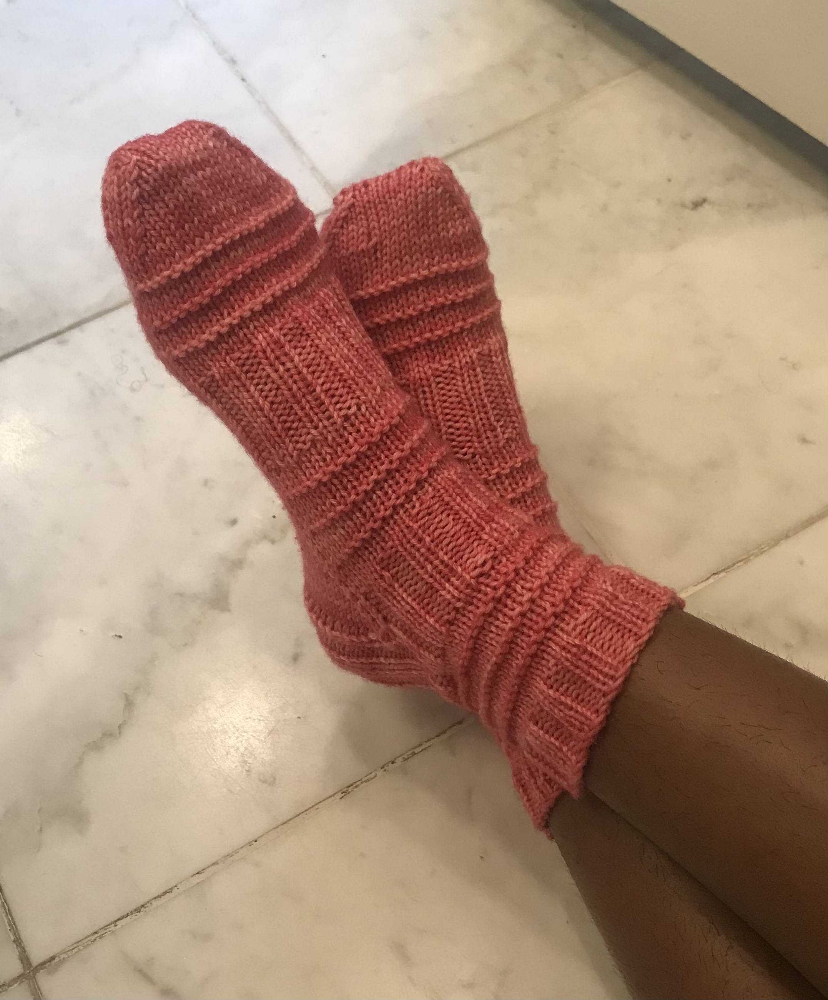
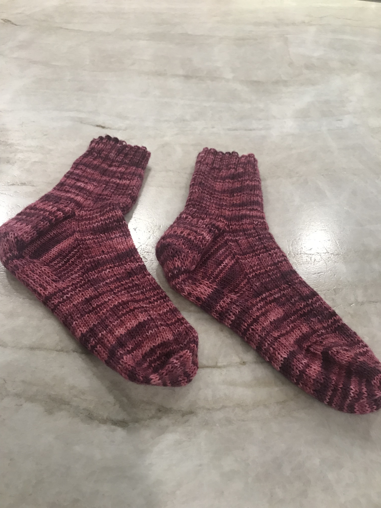
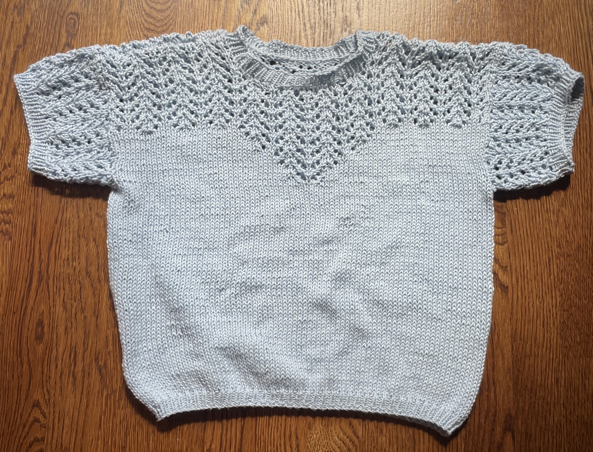
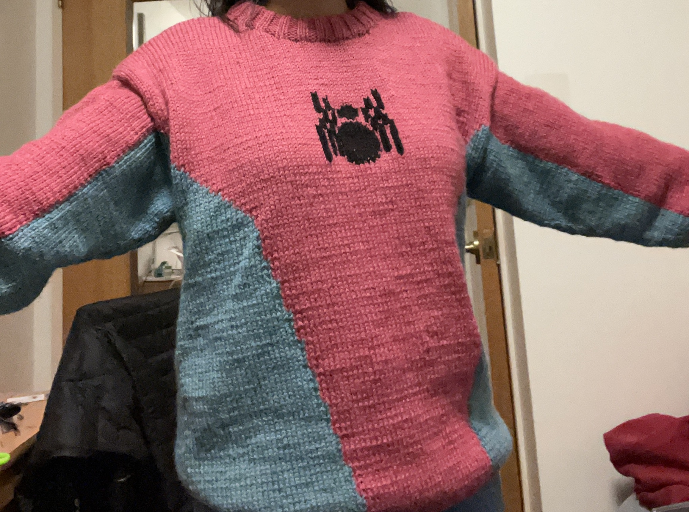
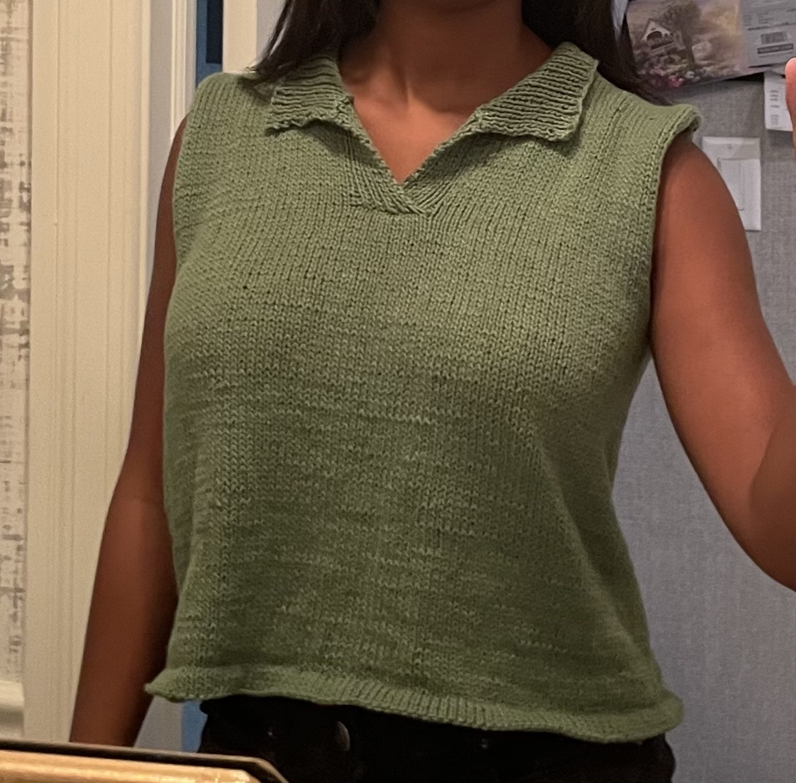
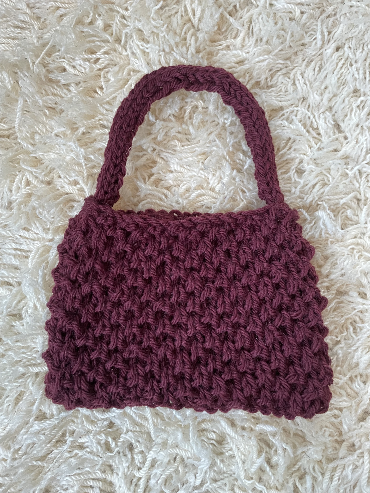
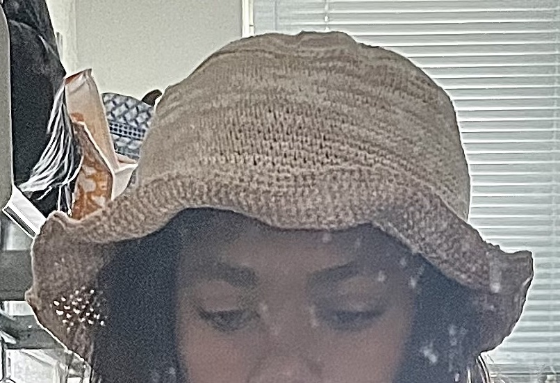
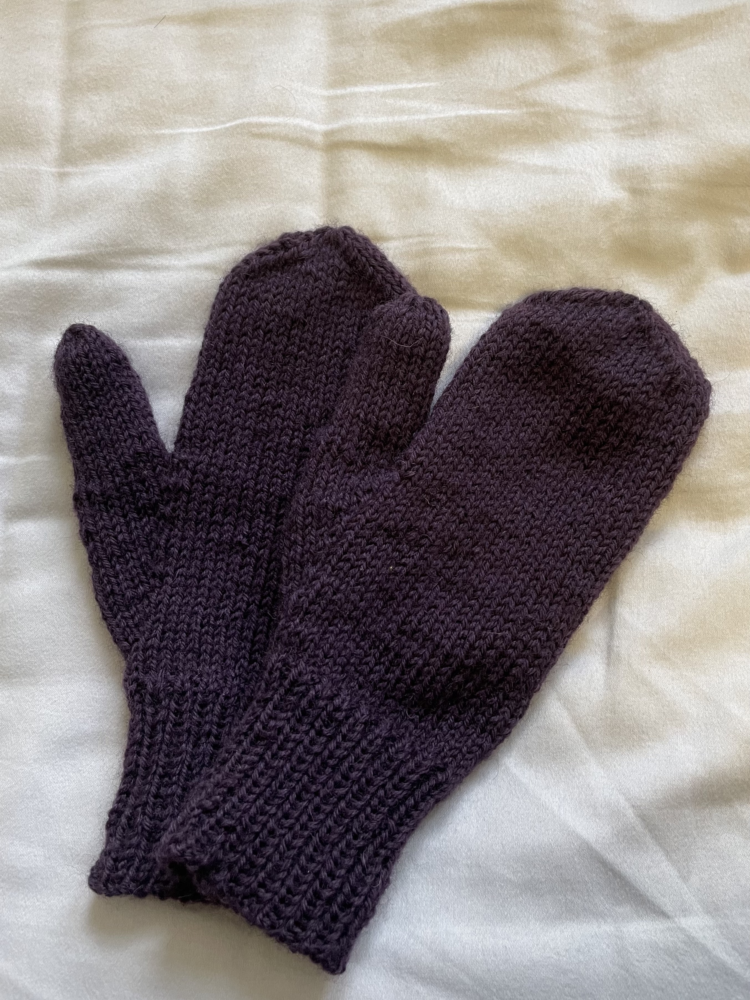
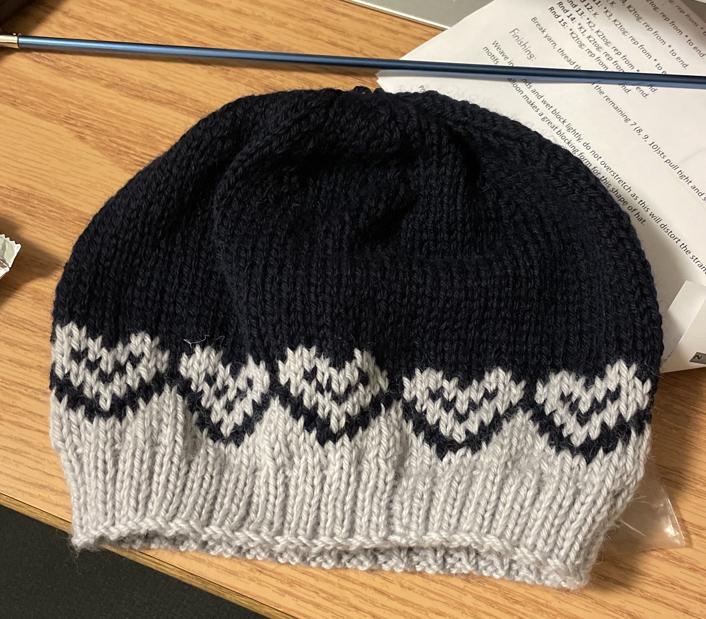
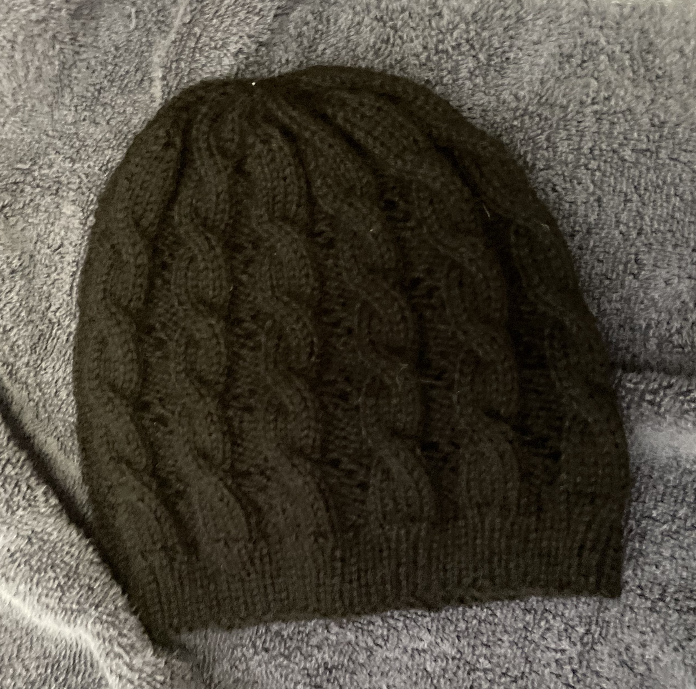

Octopus sweater

Mermaid Socks

House socks

My first pair of socks

Cotton Lace Top

Matching Snowflake Hats

Spiderman Sweater

Crocheted Hair Kerchief

Cotton Polo Style Top

Stranded fair-isle sweater

Pattern Testing Handbag

Crocheted Bucket Hat

Mittens

Stranded Heart Hat

Cabled Hat
